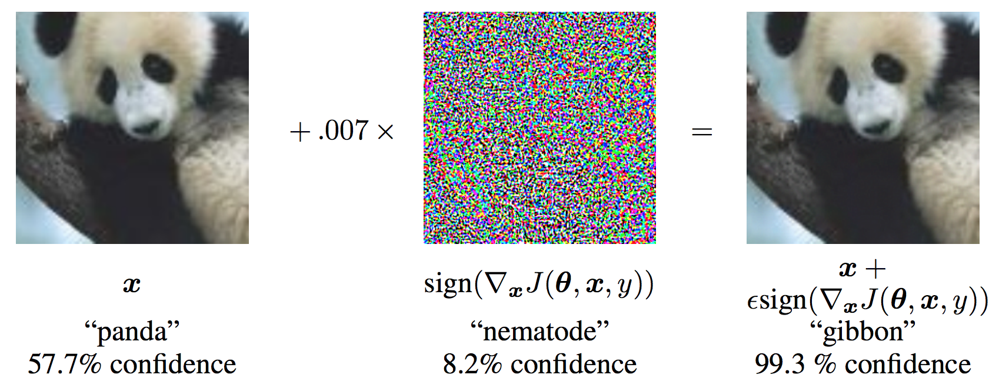
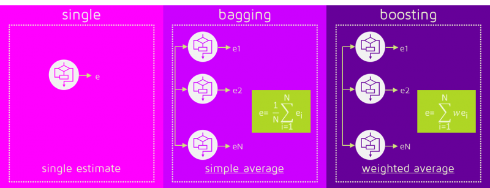
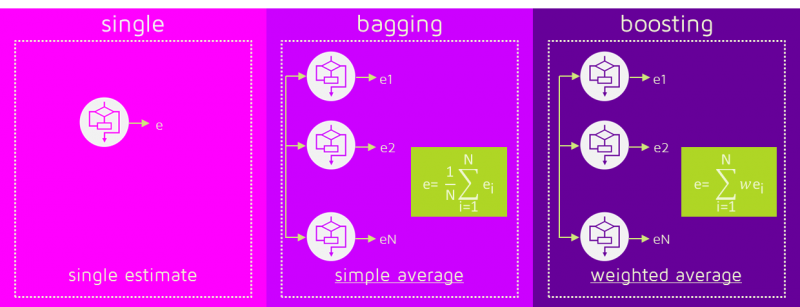

In this presentation I will talk about Deep Learning. I will assume some previous knowledge on your part, but will still quickly refresh some basic concepts.
I am no expert on the field. It is wast and moving quickly. Moreover we have just about an hour for the presentation. Despite that, I believe that it encapsulates the most important aspects and you shall benefit from it.
My main focus is on practical aspects. Here I clearly see a value of just hearing about them as compared to understanding the concepts, which is also immensely useful, but clearly beyond the time we have here.
You will learn about:
- How does DL differ from ML
- Why is DL so succesfull after getting out of favor decades ago?
- Basics of Machine Learning:
- features, regularization, overfitting
- bias/variance
- linear regression
- kernel engineering
Ask!, Ask!, Ask!
Also: Print the google document on applying ML.
Landscape of AI¶
Artificial Intelligence: The study of intelligent agents, systems that perceive their environment and take actions that maximize their chance of successfully achieving their goals
Machine Learning: A computer program is said to learn from experience E with respect to some class of tasks T and performance measure P if its performance at tasks in T, as measured by P, improves with experience E.
Representation Learning (Feature Learning): Set of techniques that allows a system to automatically discover the representations needed for learning.
Deep Learning (Hierarchical Learning): Class of machine learning algorithms that learn multiple levels of representations that correspond to different levels of abstraction; the levels form a hierarchy of concepts.
In early days of artificial intelligence, the field reaped successes on problems that can be described by set of formal mathematical rules. These rules were usually hard-coded.
This of course was significant limitation and it was necessary for the AI systems to extract patterns from raw data. The field of machine learning was born. In classical machine learning, we decide what will be the input to the algorithm. I.e. we engineer the features. Consider an example of ceaserian delivery. The AI system can recommend this procedure, but it does not do so by examining the patient directly, instead it is fed by several pieces of relevant information about the patient, usually designed by the doctor. Each peace of this information is called featrue and it is an representation of the patient. The machine learning algorithm is heavily dependent on the choice of representations. As an example from everyday life, compare doing arithmetics on Arabic numbers versus Roman numbers. Clearly one representation lends itself much better for this task. Many AI tasks can be solved by engineering the right set of features.
However, for many tasks it is difficult to know which features should be extracted. One solution to this problem is to use machine learning not only to discover the mapping from features to output but also the representations themselves. Enter the world of representation learning.
Whereas some features are extracted readily, others, usually high-level abstract features become very difficult to disentagle from the raw input data.
Deep Learning addresses this by stacking layers on neurons and henceforth constructing features in hierichical fashion from simpler features
Features¶
Expert engineered features are not enough¶
In past, features were engineered by domain experts. This worked quite well, but it took whole community tens of years before they came up with some that gave decent results. The features were often highly domain specific and not easily transferable.
On the other hand, neural nets have managed to learn features that enabled the models to signficantly surpass the performance of previous approaches.
The features are beyond what humans could come up with, make sense when visualized and are transferable between domains. Domain adaptation does not require domain specific-knowledge (some DL softEng skill needed though).
Mo' Data, Mo' GPUs¶
It is true that some skill is required to get good performance from a deep learning algorithm. Fortunately, the amount of skill required reduces as the amount of training data increases. The learning algorithms reaching human performance on complex tasks today are nearly identical to the learning algorithms that struggled to solve toy problems in the 1980s [...] The most important new development is that today we can provide these algorithms with the resources they need to succeed.
Another key reason that neural networks are wildly successful today after enjoying comparatively little success since the 1980s is that we have the computational resources to run much larger models today.
More computaitonal pwoer, allows us to train bigger models on bigger datasets. This in turns allows for more abstract and complex feeatures to be learned. It is easier to construct such features in hiararchical fashion, i.e. by more depth.
Apart from this, it is worth noting that couple of engineering tricks make the training easier. This includes replacing mean squared error with cross-entropy loss or using ReLUs as activation units.
| Bigger Models | More Data |
|---|---|
- As of 2016, the rule of thumb is that supervised deep learning algorithm will generally achieve acceptable performance with around 5000 examples per category and will match or exceed human performance when trained on dataset with at leas 10 million labeled examples.
Machine Learning¶
We start our journey with brief introduction to Machine Learning. Recall that DL differs mainly in how we obtain features, else the challenges and critical aspects are very alike.
I begin with definition of ML. To make it more concrete, I immediatelly follow up with an example.
I mostly talk about supervised learning, as unsupervised is more rare. Unsupervised is usually sth along the lines of clustering (k Means), dimensionality reduction (PCA, ICA, Autoencoders), or generative models (GANs, Deep belief Nets). Semisupervised Learning is attractive is limited amount of labeled data.
- Reinforcement learning is not that different from unsupervised but there we at least have clear objective to aim for.
A computer program is said to learn from experience E with respect to some class of tasks T and performance measure P if its performance at tasks in T, as measured by P, improves with experience E.
$T$:
- Task is how ML system should process a collection of features, i.e. example $\boldsymbol{x} \in \mathbb{R}^n$
- classification (w/ or w/o missing values), regression, transcription, translation, anomaly detection, imputation, denoising, density estimation, ...
$P$:
- usually tied to the $T$
- accuracy (classification, ...), error (regression, ...), log-likelihood (density estimation, ...)
$E$:
- dataset (w/ or w/o labels)
Example: Linear Regression¶
$$\hat{y} = \boldsymbol{w}^T\boldsymbol{x}$$
$T$: predict $y$ from $\boldsymbol{x}$
$P$: $MSE_{test} = \frac{1}{m}\sum_i^{}(\hat{y}_i^{(test)}-y_i^{(test)})^2$
$E$: $(\boldsymbol{X}^{(train)}, \boldsymbol{y}^{(train)})$
Need: ML algorithm that improves weights $\boldsymbol{w}$ in a way that reduces $MSE_{test}$ given the training examples.
Solution, minimize $MSE_{train}$: $$\nabla_{\boldsymbol{w}} MSE_{train} = 0$$ $$ ... $$ $$\boldsymbol{w} = ({\boldsymbol{X}^{(train)}}^T\boldsymbol{X}^{(train)})^{-1}{\boldsymbol{X}^{(train)}}^T\boldsymbol{y}^{(train)}$$
To make this easier to understand, let's look at example of simple machine learning model - linear regression. Given training samples and labels, we want to assign labels to unseen samples. The label is predicted as linear combination of features.
We fit the weights on training data and measure the performance with mean squared error on test data.
It can be shown that minimizing MSE is equivalent to maximazing log-likelihood. Thus we have obtained ML estimate.
Implicit: Regularizing Matrix Inversion¶
$$ \mathbf{X}^{-1} = \mathbf{X}^T\mathbf{X} + \alpha\mathbf{I} $$
Engineering suitable feature transformation function can allow simple model to generalize well on the data even if it is not linear. Feature/Kernel Engineering is a difficult task. Manual work and expertise needed.
The effect is apparent in the transformation to polar coordinates. Similrly it is apparent that feature transformations are far from trivial in any real-world example.
Feature Transformations¶
Capacity and Over-/Under- fitting¶
ML != Optimization ... generalization (test) error
model capacity controls whether the model is more likely to under- or over-fit

Caveat: Deep Learning models have theoretically unlimited capacity.
Occam's Razor: Among competing hypotheses that explain known observations equally well, select the "simplest" one.
The No Free Lunch Theorem: Averaged over all data-generating distributions, every classification algorithm has the same error rate when classifying previously unseen samples.
BUT, in practice, we encounter only some types of data-generating distributions that are problem specific. The goal of machine learning is thus to seek machine learning algorithms that perform well on data drawn from the given distribution.
Regularization¶
Any modification to a learning algorithm that is intended to reduce generalization error but not the training error.
E.g. penalize weights with L2 norm
$$J(\boldsymbol{w}) = MSE_{train} + \lambda\boldsymbol{w}^T\boldsymbol{w},$$
where $\lambda$ is a hyperparameter expressing our preference over possible model functions.
How to choose values of hyperparameters? -> train/validation split, e.g. 80/20
The fundamental trade-off between bias and variance - you seek a place where both are acceptably low - your mode has enough capacity to express the training data, but is not fundemntally biased towards this trainign data not to be able to predict on test
Popular ML Algorithms¶
Supervised:
- Linear regression, Logistic regression, LDA, SVMs, K-Nearest neighbors, Decision trees, ...
Unsupervised:
- PCA, ICA, K-Means clustering, ...

Rule #3: Choose machine learning over a complex heuristic.
Here, go back to the landscape of AI slide. Motivate DL
- assuming that data was generated by composition of factors, features, potentially at multiple levels of hierarchy.
- Some problems do not benefit from DL. Other problems benefit immensely (object recognition, speech recognition, machine translation)
Deep Learning takes some inspiration from neuroscoence, but does not try to model the way the brain works. That is a different pursuit. followed by neuroscience researchers. The domains continue to enrich each other though.
Example is DanQ: a convolutional AND recurrent neural net for quantifying the function of DNA sequences. "predicting noncoding function de novo from sequence."
- Using deep learning to model the hierarchical structure and function of a cell
- Removal of batch effects using distribution-matching residual networks
- Learning a hierarchical representation of the yeast transcriptomic machinery using an autoencoder model
- Deep biomarkers of human aging


Apart from depth and width there are other considerations in terms of architecture:
- Connectivity of the layers, backward connections
- CNNs, RNNs
- Skip connections
- ResNets
Example: Learning XOR¶
This is a toy example of deep feedforward network (also called MLP)
 |
$$J(\boldsymbol{\theta}) = \frac{1}{4}\sum_{\boldsymbol{x}}^{}(f(\boldsymbol{x}) - \hat{f}(\boldsymbol{x}; \boldsymbol{\theta}))^2,\quad \hat{f}(\boldsymbol{x};\boldsymbol{\theta}) = \boldsymbol{x}^T\boldsymbol{w} + b \quad \rightarrow \quad \boldsymbol{\hat{y}} = \frac{1}{2} :($$
Takeaway: Linear model can learn non-linear function via feature transformations. Instead of engineering it, you can learn it. Usually, by specifying some broader family of functions and tuning on the data.
$$\boldsymbol{h}=g(\boldsymbol{W}^T\boldsymbol{x}+\boldsymbol{c}),$$ where $h$ is output of hidden unit. $$\hat{f}(\boldsymbol{x}; \boldsymbol{\theta})= \boldsymbol{w}^T \mathrm{max}\{0,\boldsymbol{W}^T\boldsymbol{x}+\boldsymbol{c}\}+b$$
Here we have used Rectified Linear Unit (ReLU) as nonlinearity $g(\cdot)$ on the hidden layer.
Solution: $$ \boldsymbol{W} = \begin{bmatrix} 1 & 1\\ 1 & 1\\ \end{bmatrix}, \qquad \boldsymbol{c} = \begin{bmatrix} 0\\ -1\\ \end{bmatrix}, \qquad \boldsymbol{w} = \begin{bmatrix} 1\\ -2\\ \end{bmatrix}, \qquad b = 0. $$
Note: There is plenty of activation functions, but ReLU is prefered.

Most deep nets nowadays use ReLU for hidden layers because it avoids the vanishing gradient problem and it is faster to train than alternatives.
Else there are Leaky ReLUs or Paramatric ReLUs that have nonzero gradient for x<0.
ReLUs are inspired by biological neurons and how they respond to stimuli. ReLUs are not differentiable at 0, so we take right-sided derivative instead (set the value to 0). This is how the software implementation (Tensorflow, Theano, ...) handles the problem.
Backpropagation¶
Backpropagation is an algorithm that computes the chain rule of derivatives, with a specific order of computations that is highly efficient.
The derivative on each variable tells you the sensitivity of the whole expression on its value.
Chain rule¶
$$y=g(x) \qquad z=f(g(x))=f(y)\rightarrow \frac{dz}{dx}=\frac{dz}{dy}\frac{dy}{dz}$$
Backprop as computational graph:¶
- nodes = variables, edges = ops.
DL Libraries like Thean and Tensorflow are built with computaitonal graphs in mind. They build the graph of backprop and they can well optimize its execution.
The backprop algorithm needn't to access numeric values. Instead, it adds nodes to computational graph symbolically decribing how to obtain these derivatives.
- a graph evaluation engine then evaluates every node as soon as its parent become available.
Forward Propagation for MLP as Graph¶
Objective:
$$J = J_{MLE} + \lambda\bigg(\sum_{i,j}^{}\big(W_{i,j}^{(1)}\big)^2 + \sum_{i,j}^{}\big(W_{i,j}^{(2)}\big)^2\bigg)$$
Feedforward nets do not have feedback connections (as RNNs do).
Backpropagation is merely algorithm to compute gradient. Learning is done separately (see SGD, RMSProp, Adam, Adagrad,...). Note that this is just the old same gradient based learning.
Note that the pseudocode is on single sample. Normally we run it on sampled minibatches.
Regularization for DL¶
Deep learning algorithms are typically applied to extremely complicated domains such as images, audio sequences and text, for which the true generation process essentially involves simulating the entire universe.
What this means is that controlling the complexity of the model is not a simple matter of finding the model of the right size, with the right number of parameters. Instead, we might find - and indeed in practical deep learning scenarios, we almost always do find - that the best fitting model (in the sense of minimizing generalization error) is a large model that has been regularized appropriately.
Parameter Norm Penalties¶
$$\tilde{J}(\boldsymbol{\theta}; \mathbf{X},\mathbf{y}) = J(\boldsymbol{\theta};\mathbf{X},\mathbf{y}) + \lambda\Omega(\boldsymbol{\theta}),$$ express prior belief that the weights should be small and/or sparse. Constraints and Regularizers
from keras.regularizers import l1_l2
# Adds regularization term to cost function
model.add(Dense(64, input_dim=64, kernel_regularizer=l1_l2(0.2)
from keras.constraints import max_norm # l2 norm
# Directly applies scaling to weights
model.add(Dense(64, kernel_constraint=max_norm(2.)))
Sparse Representations¶
Express prior belief on sparse activation outputs
from keras.regularizers import l1_l2
model.add(Dense(64, input_dim=64, activity_regularizer=l1(0.2)))
$$L_2: \Omega(\boldsymbol{\theta}) = \frac{1}{2}||\boldsymbol{w}||_2^2 = \frac{1}{2}\sum_{i}^{}(w_i)^2, \qquad $$ $$L_1: \Omega(\boldsymbol{\theta}) = \frac{1}{2}\sum_{i}^{}|w_i|. $$
- usually penalize only weigths, not biases
bias_constraint - may penalize layers with different $\alpha$
- combining
l1andl2is elastic net l1is lasso and does feature selection
- Sparse representations: Puts a penalty on activation outputs. This leads to sparse representations of features and indirectl poses complicated penalty on weights.
- Biases are usually not reguralized, but can be done in same fashion.
Dataset Augmentation¶
Includes noise injection to inputs, hidden layer weights, targets. Image Preprocessing
from keras.utils import np_utils
from keras.datasets import cifar10
from keras.preprocessing.image import ImageDataGenerator
model = deep_nn() # defined elswhere
(x_train, y_train), (x_test, y_test) = cifar10.load_data()
y_train = np_utils.to_categorical(y_train, num_classes)
y_test = np_utils.to_categorical(y_test, num_classes)
datagen = ImageDataGenerator(
featurewise_center=True,
featurewise_std_normalization=True,
rotation_range=20,
width_shift_range=0.2,
height_shift_range=0.2,
horizontal_flip=True)
# compute quantities required for featurewise normalization
datagen.fit(x_train)
# fits the model on batches with real-time data augmentation:
model.fit_generator(datagen.flow(x_train, y_train, batch_size=32),
steps_per_epoch=len(x_train) / 32, epochs=epochs)
- Adversarial Training is form of dataste augmentation when we try to construct such examples that make the net fail.
- It acts as an regularizer in that it encourages the net to be locally constant in the neigborhood if the training data. Thus avderisal training is a way how to introduce constancy prior.

Early Stopping¶
Return parameters that gave the lowest validation set loss. Early Stopping
from keras.callbacks import EarlyStopping
from keras.optimizers import SGD
#define model
model = deep_nn() # this is defined elsewhere
model.compile(optimizer=SGD, loss='mse', metrics=['accuracy'])
# define early stopping callback
earlystop = EarlyStopping(monitor='val_acc', min_delta=0.0001,
patience=5, verbose=1, mode='auto')
callbacks_list = [earlystop]
# train the model
model_info = model.fit(train_features, train_labels,batch_size=128,
nb_epoch=100, callbacks=callbacks_list,
verbose=0,validation_split=0.2)
- Early stopping is simple to implement, you get it anyway
- Number of steps for training is a hyperparameter as well
- Things become more difficult if your training is unsupervised
- Early stopping is the most popular form of regularization in DL
- treats number of steps as hyperparameter (n* is optimal)
- cheap to optimize, cost mainly only from getting loss on validation set
- should refit on the whole train+valid set after picked weights from early stopping
- either reinitialize, pool data and train for n* steps
- or train from where you are and wait till error drops to the lowest one observed previously (which may not happen)
- Regularization done by limiting the param. space the NN can explore. In this sense it acts similarly as parameter norms and constraints, but the amount of regularization is obtained from the traning phase, without need for some apriori or search
Parameter Sharing¶
Forces parameter sets to be equal.
from keras.models import Sequential
from keras.layers import Dense
from keras.layers import Embedding
from keras.layers import Conv1D,GlobalAveragePooling1D,MaxPooling1D
seq_length = 64
model = Sequential()
model.add(Conv1D(64, 3, activation='relu', input_shape=(seq_length, 100)))
model.add(Conv1D(64, 3, activation='relu'))
model.add(MaxPooling1D(3))
model.add(Conv1D(128, 3, activation='relu'))
model.add(Conv1D(128, 3, activation='relu'))
model.add(GlobalAveragePooling1D())
model.add(Dense(1, activation='sigmoid'))
model.compile(loss='binary_crossentropy', optimizer='rmsprop',
metrics=['accuracy'])
model.fit(x_train, y_train, batch_size=16, epochs=10)
score = model.evaluate(x_test, y_test, batch_size=16)
- Parameter sharing allows us not to store all the params, only the unqiue ones.
- Expresses prior that only bunch of pixels have meaning, not single pixels.
- Helps to achieve translational invariance
- Used in Convolutional Neural nets, but that is not the only domain. Sequences, texts as well!
- basically expresses the prior that features learned in one place are useful also elswhere (e.g. edges in images)
Together with local connectivity this is one of the two main features of CNNs.
- more on that some time later.
Model Averaging¶
Any machine learning algorithm can benefit substantially from model averaging (e.g. bagging) at the price of increased computation and memory. Machine learning competitions are usually won by methods using model averaging over dozens of models.
from sklearn.datasets import make_hastie_10_2
from sklearn.ensemble import GradientBoostingClassifier
X, y = make_hastie_10_2(random_state=0)
X_train, X_test = X[:2000], X[2000:]
y_train, y_test = y[:2000], y[2000:]
clf = GradientBoostingClassifier(n_estimators=100,learning_rate=1.0,
max_depth=1, random_state=0).\
fit(X_train, y_train)
clf.score(X_test, y_test)
> 0.913
Check also Keras Lambda layers
 

- The goal of ensemble methods is to combine the predictions of several base estimators built with a given learning algorithm in order to improve generalizability / robustness over a single estimator.
- Bagging ... average of estimators built independently (they should be as uncorrelated as possible). It acts as regularizer in that it reduces variance of etimates
- Boosting ... weighted average of estimators built sequentially (sort of mixture of experts) ... leads to increased model capacity
- JMD may tell you more about this if he talks about Dueling Networks
- NNs can be bagged even if trained on same datastet with same objective. There is already so much happening under the hood (random initialization, minibatches sampling, hyperparams seelction,...) that the errors made by such nets will bepartially independentn
Dropout¶
Very effective and simple regularization technique. To a first approximation, dropout is a method for making bagging practical for very many and large NNs.
from keras.models import Sequential
from keras.layers.core import Dropout, Activation
from keras.layers.convolutional import Convolution2D
model = Sequential()
model.add(Convolution2D(filters = 32, kernel_size = (8, 8),
strides = (4, 4), input_shape = img_size + (num_frames, )))
model.add(Activation('relu'))
model.add(Dropout(0.5))
...
"""
Vanilla Dropout
We drop and scale at train time and don't do anything at test time.
"""
p = 0.5 # prob of keeping a unit active. higher = less dropout
def train_step(X):
# forward pass for example 3-layer neural network
H1 = np.maximum(0, np.dot(W1, X) + b1)
U1 = (np.random.rand(*H1.shape) < p) / p # first dropout mask.
H1 *= U1 # drop
H2 = np.maximum(0, np.dot(W2, H1) + b2)
U2 = (np.random.rand(*H2.shape) < p) / p # second dropout mask.
H2 *= U2 # drop
out = np.dot(W3, H2) + b3
# backward pass: compute gradients... (not shown)
# perform parameter update... (not shown)
def predict(X):
# ensembled forward pass
H1 = np.maximum(0, np.dot(W1, X) + b1)
H2 = np.maximum(0, np.dot(W2, H1) + b2)
out = np.dot(W3, H2) + b3
Batch Normalization¶
Applies a transformation that maintains the mean activation close to 0 and the activation standard deviation close to 1. See docs
from keras.models import Sequential
from keras.layers.core import Dropout, Activation
from keras.layers import Dense
model = Sequential()
model.add(Dense(64, input_dim=20))
model.add(BatchNormalization())
model.add(Activation('relu'))
model.add(Dropout(0.5))
...
Regularization Checkpoint:¶
- Use
Dropout,BatchNormalization,EarlyStoppingandl2 - Center and scale inputs, augment if possible
- Select appropriate loss function
- classification:
categorical_crossentropy,squared_hinge - regression:
huber_loss,MSE(l2 loss)
- classification:
- Optimizing L2 loss is more dificiult than the classification losses. Whenever possible, think if you can substitute regression by classification.
- The squared loss function results in an arithmetic mean-unbiased estimator, and the absolute-value loss function results in a median-unbiased estimator (in the one-dimensional case, and a geometric median-unbiased estimator for the multi-dimensional case). The squared loss has the disadvantage that it has the tendency to be dominated by outliers. Huber loss combines best of the two rolds
"The best way how to make a machine learning model generalize better is to train it on more data. Of course, this is easier said than done on partice. One way how to get around the problem is using fake data." For some tasks, it is more straightforward to create fake data then for others. Classification is such task.
- This includes also injecting additive noise to the input
- Dataset augumentation techniques are hand-designed :)
Dropout - as simple to implement as it gets
- used only during training.
- 0.5 is good place to start
- sort of like bagging, but models are not independen (they share params, which ismemory-benefitial)
- it is more effective than weight decay, activity reguralizers, ...
- can be expensive (despite being cheap to apply). Reduces model capacity -> need larger model and more training -.-
- Drop out is less effective when few traning examples available.
- Droput reguralizers hiden units to be good features in VARIETY of contexts
- Droupout is multiplicative noise on hidden units. It works as adaptive destruction of the information content in the input
- May want to draw a picture!
- BatchNormalization: mainly to aid optimization but also introduces both additive and multiplicative noise on hidden units
- batch normalization can be interpreted as doing preprocessing at every layer of the network, but integrated into the network itself in a differentiable manner.
Optimization for DL Training¶
Of all the many optimization problems involved in DL, the most difficult is NN training. It is quite common to invest days to months of time on hundreds of machines to solve even a single instance of the NN training problem.
Selecting Minibatch Size¶
- larger batches estimate gradient more accurately, but with less then linear returns
- batch should not be too small to better use hardware resources, but not too big to be able to fit to memory
- GPUs tend to prefer power 2 sized batches
Notes:¶
- Batches are sampled randomly
- Should shuffle the set, if data has some temporal correlation.
- Run several
epochs
The goal: finding parameters $\theta$ that siginficantly reduce a cost function $J(\boldsymbol{\theta})$, which typically includes a performance measure evaluated on the entire training set as well as additional regularization terms.
Optimization algorithms used for training of deep models differ from traditional optimization algorithms in several ways
- ML acts indirectly we reduce J in hope of also optimizing some P that is often intractable. In optimization, we just go for optimizing J.
- additional problems arrise if your objective is non differentiable (e.g. class assignement as piecewise constant) -> surrogate objective function
- We also practice early stopping, not going for minumun of J
- Loss ususally decomposes over samples and you compute it batch-wise
Batches randomly, But Prioritized Experience Replay may be advantageous over random batches sampling.
Epohes are passes over the set. Only the first pass is theoretically guaranteed to improve the generalization error so should not run too many times, unless overfitting. (E.g. Montior you validation loss.)
Minima, Saddles and Cliffs¶
Nearly any deep model is essentially guaranteed to have an extremely large number of local minima.
For many high-dimensional nonconvex functions, local minima (and maxima) are in fact rare compared to another kind of point with zero gradient: a saddle point.
- Plot norm of the gradient over time!
Gradient Clipping¶
clipnorm and clipvalue can be used with all optimizers
from keras import optimizers
# All parameter gradients will be clipped to:
# a maximum value of 0.5 and and a minimum value of -0.5.
sgd1 = optimizers.SGD(lr=0.01, clipvalue=0.5)
# a maximum norm of 1.
sgd2 = optimizers.SGD(lr=0.01, clipnorm=1.)
Less of a problem as many minima arise from model nonidentifiability (shufling inputs, scaling parameters) and are equivalent
Plateaus, Saddles, ...
Cliffs can countreact learning.
- They are frequent with RNNs as there we apply matrix multiplication by the same matrix repeatedly.
Similarly, gradients could often vanish in RNNs, to address this, LSTMs (Long-short-temr-memory unit) and GRUs (gated recurrent unit)
- In FF nets, use skip connections (as in res nets)
Parameter Initialization¶
Usually, we set the biases for each unit to heuristically chosen constants and initialize only the weights randomly.
If computational resources allow it, it is usually a good idea to treat the scale of the weights for each layer as a hyperparameter.
Greedy supervised pretraining is often used.
may use unsupervised learning and same data to get initial model parameters for supervised learning.
- Even prtraining on unrelated task may be helpful. Makes units look for different features, sets correct scale, ...
- Greedy layer-wise unsupervised pretraining.
Optimizer Algorithms for ML¶
SGD, RMsprop, Adagrad, Adadelta, Adam, Adamax, Nadam
Stochastic Gradient Descent¶
- Classical Gradient Descent: $$w_j := w_j - \alpha \frac{\partial J(\boldsymbol{w})}{\partial w_j},$$ where $\alpha$ is learning rate, is of $\mathcal{O}(m)$
- Loss decomposes as sum over samples $$J(\boldsymbol{w}) = \frac{1}{m}\sum_i^{m}(\hat{y}_i-y_i)^2 \xrightarrow[]{\nabla_{\boldsymbol{w}}} \nabla_{\boldsymbol{w}} J(\boldsymbol{w}) = \frac{2}{m} \boldsymbol{X}^T (\boldsymbol{\hat{y}}-\boldsymbol{y})$$
- Insight: gradient is expectation that can be estimated on subset of samples
- Draw (uniformly) a fixed-sized minibatch
- Powers nearly all of deep learning.
- SGD useful when cost function can be decomposed as sum over examples
Adaptive Learning Rate¶
In practice, anneal learning rate linearly until iteration $\tau$, then keep constant: $$\epsilon_k = (1-\alpha)\epsilon_0 + \alpha\epsilon_\tau$$
from keras.optimizers import SGD
sgd = SGD(decay = 1e-6)
Momentum and Nesterov Momentum¶
$\theta \leftarrow \theta - \epsilon_k\hat{\boldsymbol{g}}$ becomes: $$\boldsymbol{v} \leftarrow \alpha \boldsymbol{v} - \epsilon_k\hat{\boldsymbol{g}}, \qquad \theta \leftarrow \theta + \boldsymbol{v}$$
Update step is larger if experienced gradients point consistently in one direction. Counteracts getting stopped in regions of low gradient.

sgd = SGD(lr=0.01, decay=1e-6, momentum=0.9, nesterov=True)


May want to use adaptive learning rate. Minibatch usually MUCH smaller than the size of dataset ... quicknes the computation (or even makes it possible).
Stopping criterion? - usually by monitoring loss on validation set.
Adaptive LR available also with other optimziers. But here more advanced approaches taken to speed up training, avoid getting stuck,...
- Much like Adam is essentially RMSprop with momentum, Nadam is Adam RMSprop with Nesterov momentum.
- RMSprop used in the DeepMindNature paper http://www.cs.toronto.edu/~tijmen/csc321/slides/lecture_slides_lec6.pdf
Supervised Pretraining¶
- Train each layer separately
- Train each layer using as output of previously trained layer as input
- Train deep model, keep only $n$, $m$ layers on input and output, fill in between with randomly initialized layers to make even deeper model
Transfer Learning¶
- Train model on some task, keep $k$ first layers, retrain on different task (possibly with fewer samples)
Supervised pretraining is akin to Transfer Learning
Skip Connections reduce the length of the shortest path from layers to output. This facilitates backpropagation and avoids vanishing gradient problem (gradient too small and thus uninformative). This problem arises with squashing funcs (fine as we avoid them) and in deep nets (due to repeated ops through layers driivng values <1 lower and lower)
Optimization for DL summary:¶
- Initialize layer weights from normal distribution, preferably
he_normal- or check values of gradients on single minibatch, adjust scale of initial weights accordingly
- or initialize (some) weights with supervised pretraining
- use
AdamorSGDw/ momentum - use gradient clipping
- use adaptive learning rate
- select model type according to established practice (CNNs, RNNs, ResNets, ...)
Practical Methodology (cont'd)¶
In practice, one can usually do much better with a correct application of a commonplace algorithm than by sloppily applying an obscure algorithm.
Recipe¶
- Determine your goals (performance metric and their target value)
- Establish baseline implementation of the end-to-end pipeline ASAP
- Use logging, callbacks and visualizations generously to determine bottlenecks
- Iterate with incremental changes
Performance Metrics¶
model.compile(loss='mean_squared_error',
optimizer='sgd', metrics=['mae', 'acc'])
- use multiple, often problem specific
- Can report F1 score: $$F = \frac{2pr}{p+r}$$
- also Coverage, AUC
loss!=metrics
- Alternative is reporting area under precision recall curve.
- Draw precision recall curve, TPR / FPR
- Coverage: How many samples can you make a decision on autonomously (ahving human assistance is not that bad thing, also if you can feed in the information)
- E.g. Google Street View House Number Transcription had 95% coverage
Callbacks¶
import numpy as np
from keras.callbacks import Callback
from keras import backend as K
def f1(y_true, y_pred):
def recall(y_true, y_pred):
true_positives = K.sum(K.round(K.clip(y_true * y_pred, 0, 1)))
possible_positives = K.sum(K.round(K.clip(y_true, 0, 1)))
recall = true_positives / (possible_positives + K.epsilon())
return recall
def precision(y_true, y_pred):
true_positives = K.sum(K.round(K.clip(y_true * y_pred, 0, 1)))
predicted_positives = K.sum(K.round(K.clip(y_pred, 0, 1)))
precision = true_positives / (predicted_positives + K.epsilon())
return precision
precision = precision(y_true, y_pred)
recall = recall(y_true, y_pred)
return 2*((precision*recall)/(precision+recall+K.epsilon()))
class Metrics(Callback):
def on_train_begin(self, logs={}):
self.val_f1s = []
def on_epoch_end(self, epoch, logs={}):
y_pred = np.asarray(self.model.predict(\
self.model.validation_data[0])).round()
y_true = self.model.validation_data[1]
_val_f1 = f1(y_true, y_pred)
self.val_f1s.append(_val_f1)
return
metrics = Metrics()
...
model.fit(training_data, training_target,
validation_data=(validation_data, validation_target),
nb_epoch=10, batch_size=64, callbacks=[metrics])
Baseline Prototype¶
- Pick appropriate model (recall Occam's Razor, don't reinvent the wheel)
| Model | Feedforward | CNN | RNN |
|---|---|---|---|
| Input | fixed sized vector | topological structure | sequence |
- As a sanity check, make sure your initial loss is reasonable, and that you can achieve 100% training accuracy on a very small portion of the data
- Use available datasets and models to your advantage
- Use model ensembles for extra performance
- During training, monitor the loss, the training/validation accuracy, the magnitude of updates in relation to parameter values (it should be ~1e-3), and when dealing with ConvNets, the first-layer weights.
- Use unsupervised pre-training (domain dependent)
Additionally, use all that mentioned with Optimizers and Regularization
- Pick simplest model possible, don't do DL if not necessary
- It should be clear to you that successful application of DL requires quite some work.
- Rule #1: Don’t be afraid to launch a product without machine learning.
- Rule #3: Choose machine learning over a complex heuristic.
- Unsupervised pretraining should be used if your domain uses it.
- If your error on training set is higher than target error rate, you have no choice but to increase model capacity. If not regularized, must add layers, units.
- neural nets typically perform best if the training error is very low. The generalization gap then should be closed by proper regularization.
- Setting up all the callbacks, plotting, reporting etc is time consuming, but it is largely one-time effort.
Do I need more data?¶
Many ML novices are tempted to make improvements by trying out many different algorithms. Yet, it is often much better to gather more data than to improve the learning algorithm.
- performance on training set poor => more data won't help
- test set performance poor & train set performance good => get more data
How much data do I need?¶

Usually, adding a small fraction of the total number of examples will not have noticeable on generalization error. As a rule of thumb, aim at least at doubling the training set size.
Clearly, you should always get as much as possible. Of course, this is limited.
- Poor performance on trainign set
- bigger model
- tune hyperparams
- if doesnt work - data likely bad quality - get new data.
- Poor performance on test set
- if getting more data too expensive (e.g. medical domain) -> reduce model capacity = smaller model, regularization
- If doesnt work, should get more data
- The amount of data -- get it by extrapolating the learning curve
- if getting more data too expensive (e.g. medical domain) -> reduce model capacity = smaller model, regularization
Selecting hyperparameters¶
Manual vs. Automatic
If you have time to tune only one hyperparameter, tune the learning rate.
NN can sometimes perform well with only a small number of tuned hyperparameters, but often benefit significantly from tuning forty or more.
Random Search > Grid Search

Example: $$\texttt{log_learning_rate} \tilde{} U(-1, -5),$$ $$\texttt{learning_rate} = 10^{\texttt{log_learning_rate}}$$
- Can do it manually, but need experience and deeper understanding
- The effective capacity of the model is highest when the
lris correct Size and number of hidden layers is also a hyperparameter
Examples of hyperparameters:
- Learbing rate, loss function, minibatch size, number if training iterations/epohcs, momentum
- Preprocessing parameters - channels, image size, scaling, centering, ...
- number of hidden units, convoltuion kernel size, weight decay, dropout, nonlinearity, activation sparsity, weight initialization, model averaging, Batch Normalization, Pooling
Prefer Random Search over grid Search - avoids wasting computation on unimportant parameters.
- Define distribution over parameters.
- Should be on log-scale
- Should run it iteratively to achieve better granularity
Can also try Model-Based methods
- run set of experiments and adjust upcoming ones baed on results of previous ones paper
- Optimization problem
- field not estabilished yet
- Bayessian methods
Debugging Strategies for ML¶
Machine learning systems are difficult to debug [...]
- Visualize model in action
- Visualize the worst mistakes
- Check training and test errors
- Bias / Variance trade-off
- Fit a tiny dataset
- Monitor histograms of activations and gradients
- Prototype, fail & improve
Often you don't know appriori what the inteded behaviour of the model is. You are using ML/DL to help you undestanding sth what cannot specify yourself.
DL/ML models are assemblage of parts that are adaptive. If A is wrong B,C,D often make up for it.
- Suppose you implement gradient update rule on biases and do it erroneously such that thet become negative $b \leftarrow b-\alpha$. You may not figur out as weights may adapt
- Fit on data that is so simple (small) that you can predict correct behavior
- Test just part of the net in isolation.
Visualize model in action:
- look at your agent playing a game
- listen to speech samples of a generative model
Visualize the worst mistakes
- get confidence measure for a training example and look at those that are the worst cases of misslasification (very confident about a different label) or that the model has troubles deciding about (not really confident about any label). You should be picking up the latter anyway.
Check training and test errors:
- If cannot get low training error: something must be wrong.
- If train err low but test high:
- Overfitting, need to regularize
- Alternativelly, check that you set up your test model correctly (Droputs, BN, weight loading, hyperparams, ...)
| High Variance (overfit) | High Bias (bad/few features) |
|---|---|
- check question: what I need to do to adress the overfitting issue:
- regularize, fewer features, more trainign examples
Fit a tiny dataset:
- you must be able to correctly classify single example / correctly reproduce a single example (autoencoder) / emit samples similar to one example (generative nets)
Monitor histograms of activations and gradients
- possibly over one epoch
- can also monitor relative value of parameter update to parameter (should be like ~1%)
- note that for sparse data (like in NLP) some parts of net updated only very infrequently.
Landscape of DL¶
- Theano
- Tensorflow
- Keras
General words of advice:
- find a suitable architecure online and adapt
- If available, use pretrained model
Other stuff we should talk about:
* CNNs
* RNNs
* Reinforcement Learning (JMD)
* Autoencoders
* DL as applied to genomics
* Grid Search
* Computational Graphs
* Transfer Learning
*
Other interesting stuff
* Teacher/Student Nets
* Model Compression
* Neuromorphic eng
* Quantum computing for ML
* Zero Shot learning
* Supervised PretrainingReferences¶
- http://www.deeplearningbook.org/
- http://cs229.stanford.edu/materials/ML-advice.pdf
- http://cs231n.github.io
Reading¶
- http://blog.dennybritz.com/2017/01/17/engineering-is-the-bottleneck-in-deep-learning-research/
- https://developers.google.com/machine-learning/rules-of-ml/
- https://becominghuman.ai/cheat-sheets-for-ai-neural-networks-machine-learning-deep-learning-big-data-678c51b4b463
- http://web.mit.edu/16.070/www/lecture/big_o.pdf
- https://www.tensorflow.org/versions/r1.0/get_started/summaries_and_tensorboard
- https://anvaka.github.io/rules-of-ml/
- https://databricks.com/session/deep-learning-with-apache-spark-and-gpus
- deeplearning-biology
- awesome-deepbio
- https://github.com/tensorflow/models